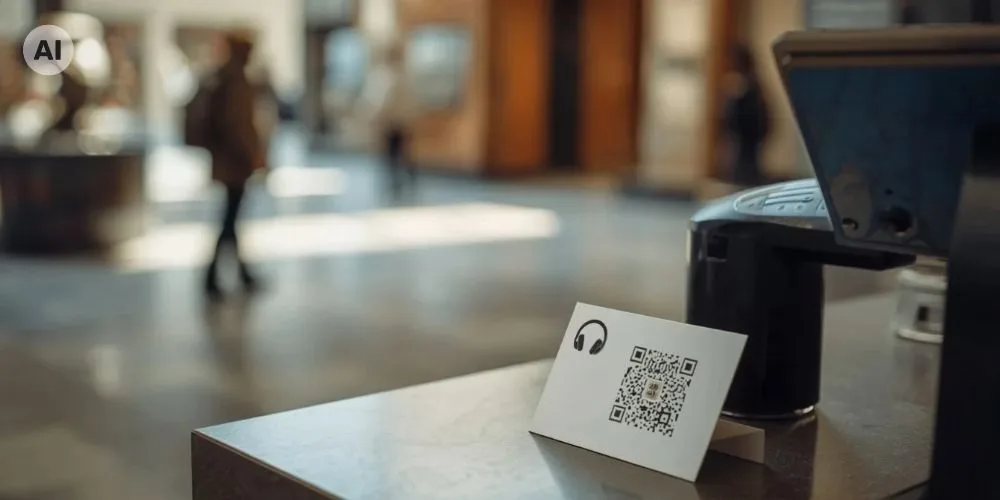

Dr. Rosa Sala
Umsatzbeteiligung bei Museums-Audioguides: So funktioniert die Partnerschaft mit Nubart GUIDE

Museen, die einen kompletten Audioguide wünschen – bei Bedarf einschließlich der Produktion der Inhalte –, können diesen über ein Umsatzbeteiligungsmodell mit geringen oder gar keinen Vorabkosten erhalten. Mit Nubart GUIDE verkauft das Museum den Besuchern als optionale Zusatzleistung eine nicht übertragbare QR-Code-Karte, die ihnen Zugang zum digitalen Audioguide gewährt. Nubart übernimmt die Kosten für die Ersteinrichtung und die Karten sowie gegebenenfalls für die Produktion der Inhalte. Nubart berechnet dem Museum anschließend eine vereinbarte Gebühr für jede aktivierte Karte. Das Museum legt den Verkaufspreis selbst fest, höchstens jedoch bis zu einem vertraglich vereinbarten Limit. Die Differenz zwischen Verkaufspreis und Nubarts Gebühr verbleibt beim Museum.
Die Umsatzbeteiligung ist eine von mehreren Möglichkeiten, Nubart GUIDE zu nutzen. Alternativ können Museen die Karten direkt zu unseren regulären Konditionen kaufen, ohne eine Umsatzbeteiligungsvereinbarung abzuschließen. Die meisten unserer Kunden entscheiden sich für diese zweite Option.
Unser Artikel zur Geschichte der Umsatzbeteiligung erläutert, warum dieses Modell fast verschwunden wäre, als Audioguides auf Smartphones umgestellt wurden, und wie ein nicht übertragbarer QR-Code dafür sorgt, dass es wieder funktioniert. Ein nicht übertragbarer Code ist wertlos, wenn er weitergeleitet wird, sodass aus einem Verkauf nicht viele kostenlose Hörer werden. Dieser Artikel befasst sich mit den praktischen Aspekten: Wie die Partnerschaft im Alltag funktioniert, wer was investiert und was wir im Gegenzug vom Museum erwarten.
Das Grundprinzip: eine vereinbarte Gebühr pro aktivierter Karte
Bei klassischen Audioguides zum Ausleihen erhielt der Anbieter in der Regel einen prozentualen Anteil der Einnahmen aus der Vermietung. Nubart funktioniert anders. Vor Projektbeginn vereinbaren Nubart und das Museum die Gebühr für jede aktivierte Karte sowie den Höchstpreis, den das Museum den Besuchern berechnen darf. Das Museum legt den Verkaufspreis selbst fest, höchstens jedoch bis zu diesem Limit. Die Differenz zwischen dem Verkaufspreis und der Gebühr von Nubart verbleibt beim Museum.
Das hat drei praktische Vorteile. Erstens weiß das Museum genau, welche Kosten pro Verkauf anfallen – unabhängig vom festgelegten Verkaufspreis. Zweitens hängen die Kosten von der Zahl der aktivierten Karten ab: Wir stellen dem Museum in regelmäßigen Abständen, in der Regel monatlich, die in diesem Zeitraum aktivierten Karten zum vereinbarten Entgelt in Rechnung. Drittens lässt sich die Rechnung leicht überprüfen, da das Museum jederzeit in seinem passwortgeschützten Kundenportal einsehen kann, wie viele Karten aktiviert wurden.
In diesem Artikel geht es um das optionale Umsatzbeteiligungsmodell, bei dem der Audioguide eine Zusatzleistung ist, die Besucher bei Bedarf erwerben können. Im sog. universellen Modell ist der Audioguide im Eintrittspreis enthalten und jeder Besucher erhält eine Karte. Beide Modelle werden in unserem Artikel zur Monetarisierung eines Museums-Audioguides beschrieben.
So funktioniert es Schritt für Schritt
- 1 · NubartVersendet die KartenDie Karten bleiben Eigentum von Nubart, bis sie an Besucher ausgegeben werden.
- 2 · MuseumVerkauft die KarteDas Museumspersonal bietet die Karten an der Kasse oder online zusammen mit der Eintrittskarte an.
- 3 · BesucherScannt den QR-Code und aktiviert die KarteMit der Aktivierung wird die Karte für den jeweiligen Besucher freigeschaltet.Wird abgerechnet
- 4 · NubartRechnet aktivierte Karten abDas Museum kann die Anzahl der Aktivierungen jederzeit im Kundenportal einsehen.
- Wir richten den Audioguide ein. Nubart GUIDE basiert auf einer Progressive Web App (PWA). Der Audioguide läuft direkt im Browser des Smartphones und ist in allen vereinbarten Sprachen verfügbar. Besucher scannen den QR-Code und hören die Inhalte an. Sie müssen weder eine App herunterladen noch sich registrieren.
- Wir liefern die Karten. Die Karten werden im Design des Museums gestaltet und mit einem individuellen QR-Code versehen. Sie bleiben Eigentum von Nubart, bis sie an Besucher ausgegeben werden. Das Museum muss sie daher nicht vorab kaufen.
- Das Museum verkauft die Karten. Das Museumspersonal bietet sie an der Kasse oder an anderen Verkaufsstellen an, an denen Besucher ihre Eintrittskarten erwerben. Verkauft das Museum Eintrittskarten online, kann die Audioguide-Karte auch digital beim Bezahlvorgang ausgegeben werden.
- Der Besucher scannt die Karte. Beim ersten Scannen wird die Karte aktiviert. Anschließend kann der Besucher den Audioguide während des Besuchs und danach beliebig oft nutzen. Wird die Karte an eine andere Person weitergegeben, kann diese den Code nicht nutzen. Das ermöglicht unsere patentierte LWAC-Technologie.
- Wir berechnen nur aktivierte Karten. Jede aktivierte Karte wird einmalig in Rechnung gestellt – unabhängig davon, wie oft der Besucher den Audioguide anschließend nutzt. Karten, die nie aktiviert werden, werden nicht berechnet. Das Museum muss keine Mindestmenge an Karten kaufen.
- Wir kümmern uns um den Kartenbestand und die Nutzungsdaten. Wir überwachen die Nutzung und versenden rechtzeitig neue Karten, bevor der Vorrat zur Neige geht. Das Museum muss sich also nicht selbst um Nachbestellungen kümmern. In einem passwortgeschützten Kundenportal kann es jederzeit einsehen, wie viele Karten Monat für Monat aktiviert wurden. Diese Zahlen bilden auch die Grundlage für unsere Abrechnung. Darüber hinaus hat das Museum Zugriff auf die Besucherstatistiken von Nubart GUIDE, beispielsweise auf die gewählten Sprachen und die Hörzeiten. Unser Artikel zur Geschichte der Umsatzbeteiligung erläutert, warum eine gemeinsame Erfassung dieser Daten bei solchen Vereinbarungen wichtig ist.
Wer investiert was? Das Museum zahlt im Voraus wenig oder gar nichts
Bei einer Partnerschaft mit Umsatzbeteiligung übernehmen wir den Großteil der Anfangsinvestition. Wir drucken und versenden die Karten, richten den Audioguide ein, stellen ihn technisch bereit und produzieren bei Bedarf auch die Inhalte. Diese Kosten tragen wir zunächst selbst und amortisieren sie nach und nach über die Gebühr für jede aktivierte Karte.
Das Museum muss zu Beginn wenig oder gar kein Geld investieren. Vereinbaren wir bei Vertragsunterzeichnung eine Vorauszahlung, wird diese mit den ersten Rechnungen verrechnet, sodass keine zusätzlichen Kosten entstehen. Der Beitrag des Museums besteht vor allem in organisatorischem Aufwand: Es stellt Platz an der Kasse bereit, schult das Kassenpersonal kurz und sorgt dafür, dass die Karten den Besuchern aktiv angeboten werden. Nach unserer Erfahrung ist genau das entscheidend für den Erfolg eines Projekts.
Da wir die Kosten zunächst selbst tragen, schließen wir Umsatzbeteiligungsvereinbarungen über mehrere Jahre ab. Die Vertragslaufzeit muss lang genug sein, damit sich unsere Anfangsinvestition bei realistisch zu erwartenden Verkaufszahlen amortisieren kann.
Vor Projektbeginn
NubartDruckt die Karten, richtet den Audioguide ein, stellt ihn technisch bereit und produziert bei Bedarf die Inhalte.
MuseumStellt die Skripte oder bereits vorhandene Inhalte zur Verfügung und weist das Kassenpersonal ein.
Während der Vertragslaufzeit
NubartVersendet rechtzeitig neue Karten, bevor der Vorrat zur Neige geht, und stellt jede aktivierte Karte einmalig in Rechnung.
MuseumBietet die Karten an allen Kassen aktiv an und verkauft sie zum vereinbarten Preis, höchstens jedoch bis zum vereinbarten Limit.
Nach Amortisation unserer Investition
NubartBetreibt den Audioguide weiterhin bis zum Ende der vereinbarten Vertragslaufzeit.
MuseumErhält ein kostenloses Nutzungsrecht an den von Nubart erstellten Aufnahmen, das auch nach Vertragsende bestehen bleibt.
Inhalte: Das Museum stellt sie bereit oder Nubart produziert sie
Das Museum verfügt bereits über Audioinhalte
Viele Museen verfügen bereits über Aufnahmen oder Skripte aus früheren Audioguides mit Leihgeräten oder aus kostenlosen Apps. Wenn das Museum die Rechte an diesen Inhalten besitzt, können wir sie in Nubart GUIDE übernehmen. Das Museum bleibt Eigentümer der Inhalte, und wir nutzen sie ausschließlich für den Betrieb des Audioguides während der Vertragslaufzeit.
Nubart produziert die Inhalte
Falls noch kein Audioguide vorhanden ist, können wir ihn auf Grundlage der vom Museum freigegebenen Texte produzieren. Dazu gehören Übersetzungen, Sprachaufnahmen und Audiobearbeitung. Im Rahmen einer Partnerschaft mit Umsatzbeteiligung übernehmen wir auch die Produktionskosten zunächst selbst. Das Museum erhält dafür keine separate Rechnung, da wir die Kosten über die Gebühren für aktivierte Karten decken.
Sobald wir die Produktionskosten amortisiert haben, erhält das Museum das Recht, die Aufnahmen kostenlos und zeitlich unbegrenzt für eigene Zwecke zu nutzen. Der Vertrag legt fest, wann dieser Zeitpunkt erreicht ist. Auf jeder Rechnung ist außerdem ersichtlich, welcher Teil der Investition noch nicht amortisiert ist.
Weitere Sprachen, Stationen oder Inhalte für Wechselausstellungen können später ergänzt werden. Sie werden in der Regel separat beauftragt und berechnet, sodass sie die ursprüngliche Investition nicht erhöhen.
Vergleich der Umsatzbeteiligung mit anderen Modellen
Audioguides werden schon lange auf unterschiedliche Weise im Rahmen von Umsatzbeteiligungsmodellen angeboten. Die folgende Tabelle vergleicht drei Modelle, denen wir in der Praxis häufig begegnen.
| Aspekt | Audioguides mit Leihgeräten | QR-Audioguides mit Bezahlvorgang | Nubart GUIDE |
|---|---|---|---|
| Wo der Besucher bezahlt | Am Verleihschalter | Auf dem eigenen Smartphone, nach dem Scannen des QR-Codes | An der Kasse oder online, zusammen mit dem Eintritt |
| Wie der Anbieter bezahlt wird | In der Regel ein prozentualer Anteil jeder Vermietung | Häufig ein prozentualer Anteil der Einnahmen | Eine vereinbarte Gebühr pro aktivierter Karte |
| Wer legt den Besucherpreis fest? | In der Regel vertraglich festgelegt | Häufig der Anbieter | Das Museum, bis zu einem vereinbarten Höchstbetrag |
| Wie werden die Umsätze erfasst? | Anhand der Aufzeichnungen des Betreibers | Anhand der Daten des Zahlungsdienstleisters | Das Museum kann die für die Abrechnung maßgeblichen Aktivierungszahlen überprüfen |
| Was das Museum bereitstellt | Fläche für einen Verleihschalter | Oftmals nichts | Aktive Bewerbung und Verkauf der Karten an der Kasse |
| Wichtigster Nachteil | Personal- und Gerätekosten sowie schwer überprüfbare Umsätze | Besucher müssen nach dem Scannen zusätzlich bezahlen, was einen weiteren Schritt erfordert | Der Erfolg hängt davon ab, ob das Personal den Audioguide aktiv anbietet |
Was wir vom Museum erwarten
Da wir den Großteil der Anfangsinvestition übernehmen, erwarten wir vom Museum einige konkrete Zusagen.
Erstens soll das Museum den Audioguide jedem Besucher aktiv anbieten – an allen Kassen und, sofern vorhanden, auch im Online-Shop. In der Regel reicht es aus, das Kassenpersonal kurz zu schulen.
Zweitens sollen die Karten verkauft und nicht kostenlos ausgegeben werden. Ausnahmen, beispielsweise für Schulklassen, können im Voraus vereinbart werden. Jede aktivierte Karte wird jedoch in Rechnung gestellt, auch wenn sie im Rahmen einer solchen Ausnahme kostenlos ausgegeben wurde.
Drittens muss der Verkaufspreis innerhalb des vereinbarten Höchstbetrags liegen. Der Preis beeinflusst maßgeblich, wie viele Besucher den Audioguide kaufen. Bei unseren Installationen beobachten wir tendenziell sinkende Verkaufszahlen, wenn der Preis steigt. Unser Artikel zur Monetarisierung eines Museums-Audioguides enthält einen Rechner, mit dem sich nachvollziehen lässt, wie Preis und Verkaufszahlen zusammenhängen.
Viertens vereinbaren wir, dass das Museum während der Partnerschaft für denselben Besuch keinen konkurrierenden digitalen Audioguide anbietet. Dazu zählen beispielsweise eine kostenlose App, ein Audioguide auf der Website oder Audioguides mit Leihgeräten. Da wir das Projekt vorfinanzieren, ist es wichtig, dass die Besucher den von uns bereitgestellten Audioguide nutzen. Allgemeine Informationen auf der Website, Führungen durch Mitarbeitende, Schilder, Texttafeln und kurze Audiobeiträge zur Barrierefreiheit, die keine vollständige Führung darstellen, sind davon ausgenommen.
Schließlich vereinbaren wir eine mehrjährige Vertragslaufzeit, damit sich unsere Anfangsinvestition amortisieren kann.
Wann das Modell passt – und wann nicht
Das optionale Umsatzbeteiligungsmodell eignet sich besonders für Museen mit einer Kasse oder Rezeption, an der das Personal mit allen Besuchern in Kontakt kommt. Es passt auch zu Museen, die mit dem Audioguide Einnahmen erzielen möchten, statt für dessen Bereitstellung zu bezahlen, und ihn lieber als Zusatzangebot verkaufen, anstatt ihn in den Eintrittspreis einzubeziehen.
Auch die Besucherzahl spielt eine wichtige Rolle. Wenn wir die Inhalte selbst produzieren und die Produktionskosten über die Gebühren für aktivierte Karten decken müssen, sollte das Museum eine ausreichend hohe Besucherzahl erreichen. Verfügt das Museum bereits über geeignete Inhalte, kann das Modell auch für kleinere Häuser funktionieren.
In Museen mit freiem Eintritt und ohne Kasse ist dieses Modell schwieriger umzusetzen. Wenn das Personal keine Produkte verkaufen darf, fehlt eine natürliche Gelegenheit, die Karten anzubieten. Einige Museen mit freiem Eintritt lösen dieses Problem mit einem Empfangsschalter, an dem jeder Besucher eine kostenlose Eintrittskarte erhält. Das bietet häufig bereits eine gute Gelegenheit, auf den Audioguide aufmerksam zu machen. Fehlt ein solcher Kontaktpunkt, ist in der Regel ein anderes Modell besser geeignet.
Wenn das Museum allen Besuchern einen Audioguide zur Verfügung stellen möchte, ist das universelle Modell besser geeignet, bei dem der Audioguide im Eintrittspreis enthalten ist. Möchte das Museum die Karten lieber direkt kaufen und die gesamte Marge behalten, ist auch das möglich – ganz ohne Umsatzbeteiligungsvereinbarung. Beide Optionen werden in unserem Artikel zur Monetarisierung eines Museums-Audioguides beschrieben.
Ein Hinweis für öffentliche Museen
Auch eine Partnerschaft mit Umsatzbeteiligung ist ein Vertrag, und öffentliche Museen müssen in der Regel die geltenden Vergabevorschriften beachten. Ob eine Direktvergabe möglich ist, hängt vom jeweiligen Land, der Art der Einrichtung und dem geschätzten Auftragswert ab. Unser Modell ändert nichts an der Pflicht, diese Vorschriften einzuhalten. Ist eine Ausschreibung erforderlich, können wir uns daran beteiligen und erläutern, wie unser Modell funktioniert – etwa durch individuelle Aktivierungscodes, eine Abrechnung auf Basis der Aktivierungen und nachvollziehbare Nutzungsdaten.
Wenn Sie wissen möchten, ob sich eine Partnerschaft mit Nubart GUIDE für Ihr Museum wirtschaftlich lohnt, teilen Sie uns bitte drei Dinge mit: Ihre jährliche Besucherzahl, wie die Besucher das Museum betreten und ob bereits Audioinhalte vorhanden sind. Diese Angaben reichen in der Regel für eine erste Einschätzung aus.
Lernen Sie Nubart GUIDE selbst kennen: Bestellen Sie kostenlose Musterkarten und probieren Sie den Audioguide aus.
Wir hoffen, dass Sie diesen Artikel hilfreich fanden. Abonnieren Sie unseren Newsletter, damit Sie keinen unserer Beiträge verpassen.
Das könnte Sie auch interessieren

Umsatzbeteiligung bei Audioguides: ein altes Modell, das im Smartphone-Zeitalter ein Comeback erlebt
Wie die Umsatzbeteiligung im Zeitalter der Geräte funktionierte, warum die Digitalisierung dieses Modell zunichte machte und wie nicht übertragbare QR-Codes das alte Wirtschaftsmodell wieder tragfähig machen.

Wie Museen einen QR-Code-Audioguide monetarisieren
Ein QR-Code kann unbegrenzt geteilt werden, daher kann ein öffentlicher Link nicht verkauft werden. Wie Nubarts patentiertes LWAC-Verfahren eine Karte nicht übertragbar macht – mit konkreten Nutzungsdaten und einem Break-even-Rechner.